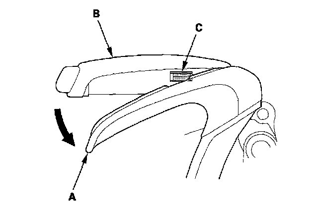
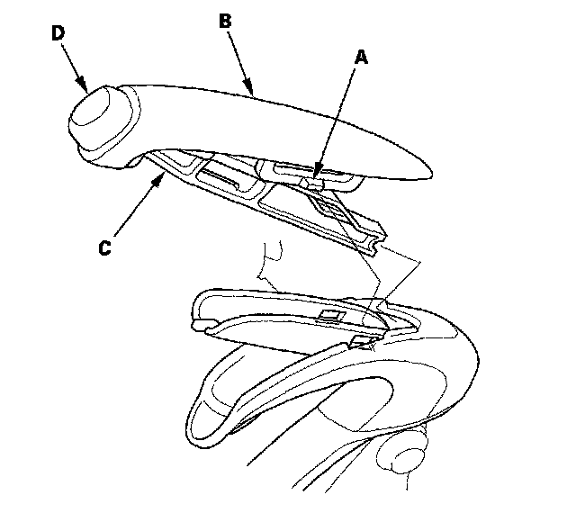
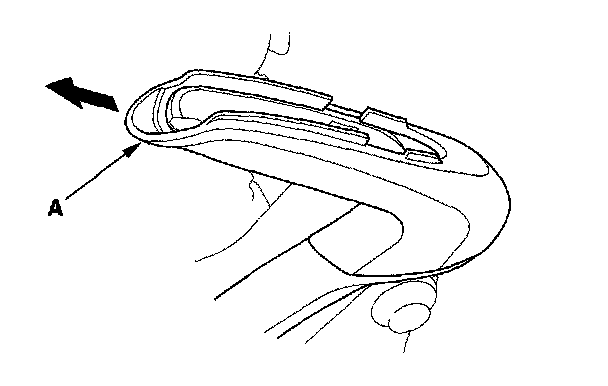
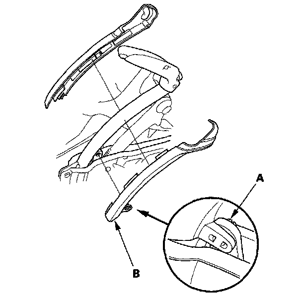
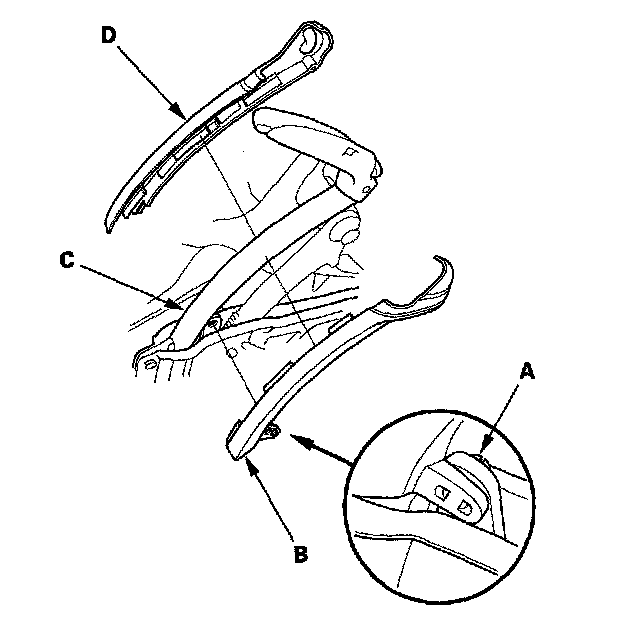
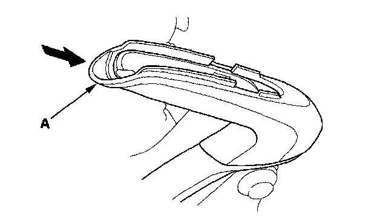
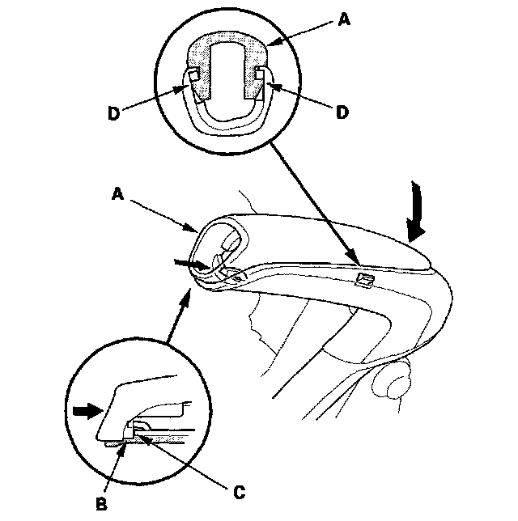
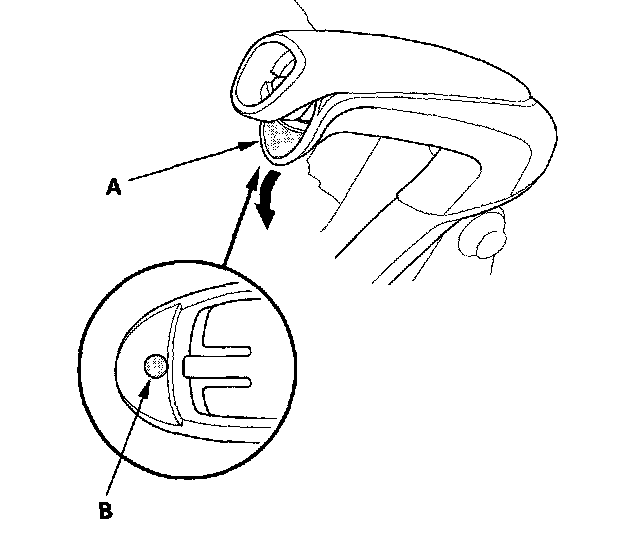
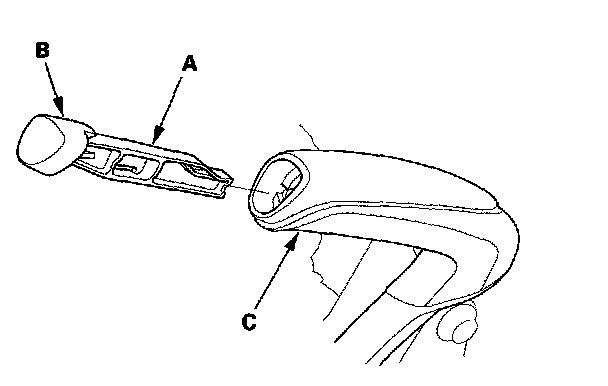

Parking Brake Lever: Service and Repair
Parking Brake Lever Grip and Cover ReplacementRemoval
Lever Grip
1. Remove the center console.
2. Pull up the parking brake fully (8 to 10 clicks).
3. Start at the front edge (A), peel lever grip away from lever cap (B). Continue to peel the grip from the lever to gain access to the hooks (C).

4. Push in both sides of the hook (A) on the lever cap (B), and remove the lever cap and the pushrod (C) with the knob (D).

5. Remove the lever grip (A) by sliding it up.

Lever Cover
6. Remove the clip (A) on the driver's side of the parking brake lever cover (B).

7. Separate the parking brake lever covers, and remove them.
Installation
Lever Cover
1. Install the clip (A) on driver's side of the parking brake lever cover (B) to the lever (C).

2. Install the passenger's side of the parking brake lever cover (D), and squeeze both sides of the cover together.
Lever Grip
3. Install a new lever grip (A) by sliding it over the cover.

4. Install a new lever cap (A) on to the lever by aligning the notch (B) in the cap with the tab (C) on the lever.

5. With the lever cap and grip in position, push down on the cap to lock the hooks (D) into place.
6. Carefully peel back the front edge (A) of the lever grip, and apply a small amount of gel type super glue (B). Carefully push the grip back into place and wait a minute for the glue to adhere.

7. Install a new pushrod (A) with the knob (B), and push them into the parking brake lever (C).
NOTE: Do not use the removed pushrod and knob.

8. Release and pull the parking brake about 10 times.
9. Check the push knob play of about 0.08 in (2 mm.) and that the parking brake lever moves smoothly, then do the parking brake inspection.
10. Install the center console.